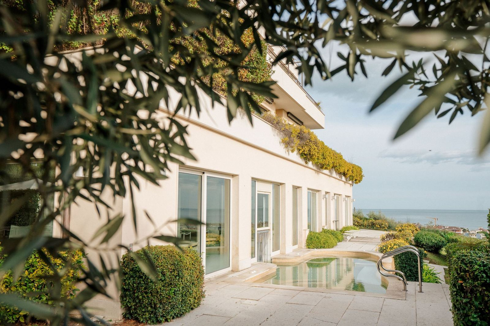
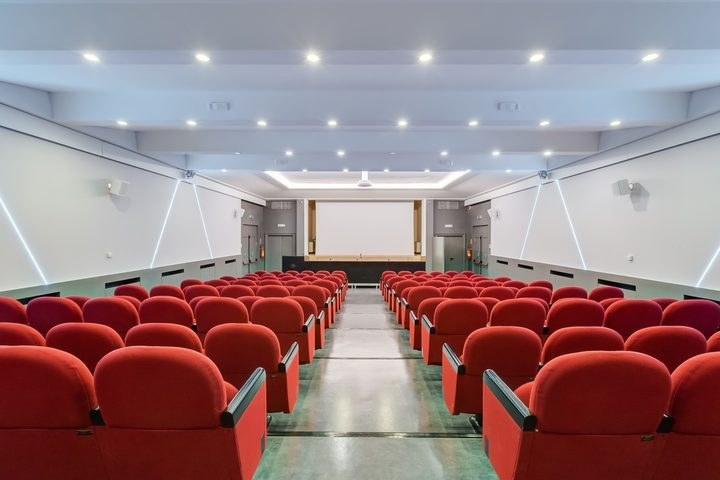
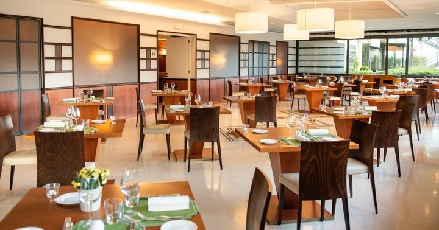
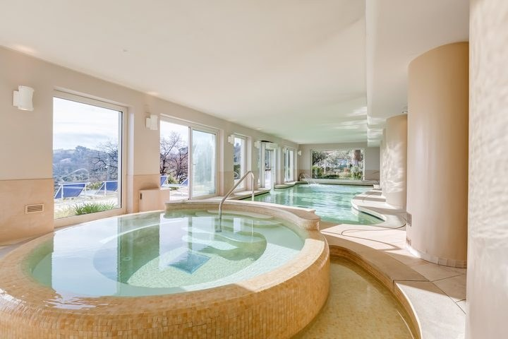

Business travel · Francavilla al Mare · Pescara
Take the pressure out of business travel.
A four-star hotel & spa above the Adriatic, minutes from Pescara, where meetings, recovery and a proper dinner are already arranged, so your only job is the one you came for.
A destination that moves business forward.

Work

Connect

Recharge
For business guests
Executive Business Stay Package
Planning regular trips to Abruzzo? Ask us about the Executive Business Stay Package and the company rates we offer to business travellers.
Questions & answers
Good to know before you go.
Where is Villa Maria Hotel & Spa?
On the hill above Francavilla al Mare, just south of Pescara in Abruzzo. Abruzzo Airport (Pescara) is a short drive away, Pescara Centrale station has easy rail connections, and the A14 Pescara Sud exit is close by.
Does the hotel have meeting rooms?
Yes, from private meeting rooms to an auditorium, with video-conferencing and fast Wi-Fi. Ask us about capacity for your group.
Can I get an invoice for my company?
Yes. We bill your company directly and welcome corporate cards. If you have a company code, add it when you book.
What is in the Executive Business Stay Package?
A Superior or Deluxe room with a writing desk, breakfast served early, high-speed Wi-Fi, spa and sauna access, padel, pool and gym, a meeting room on request, express check-out and private parking.
Is there parking?
Yes. Private parking is free for guests and includes EV charging.
Your next trip to Abruzzo can feel lighter.
Ask us anything, from meeting-room capacity to the quietest room in the house.